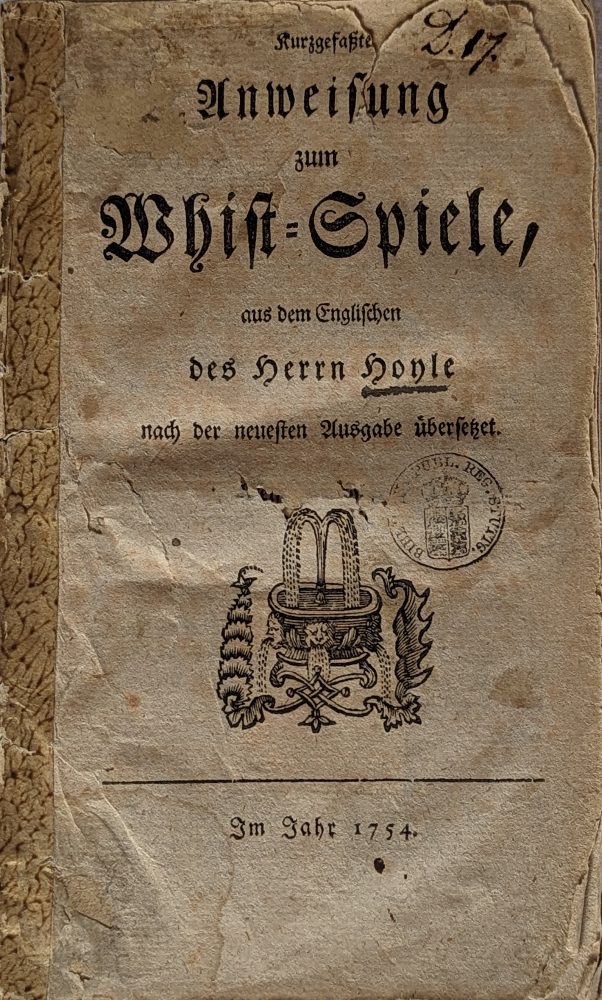

A Descriptive Bibliography of Edmond Hoyle
Copyright © 2014-26 by David Levy
(page updated 2023-11-30)User Guide
Whist.De.1
Kurzgefaßte Anweisung zum Whist-Spiele, first edition, 1754.
 |
Title: | Kurzgefaßte | Anweiſung | zum | Whist=Spiele, | aus dem Engliſchen | des Herrn Hoyle | nach der neueſten Ausgabe überfeket. | [tailpiece] | [rule] | Im Jahr 1754. |
| Collation: | 8o: A8(A1+2) B–E8 F6 [$1–5 signed]; 48 leaves, pp. [1–2] [4 ] [3] 4–8 [9] 10–91 [92] |
| Contents: | Signature (Page) Reference | Contents | Signature (Page) Reference | Running Titles |
| A1r (1) | title | |||
| A1v (2) | blank | |||
| A1+1r–A1+2v | ‘[row of type orn] | Inhalt. | [...]’ | A1+1v–A1+2v | ‘Inhalt.’ | |
| A2r–A4v (3–8) | ‘[headpiece] | Borbericht. | [...]’ | A2v–A4v (4–8) | ‘Borbericht.’ | |
| A5r–F6r (9–91) | ‘[headpiece] | Das erste hauptstadt | [...]’ | A5v–F6r (10–91) | ‘Das [ordinal chapter number] Hauptstadt.’ | |
| F6v (92) | blank |
| Catchwords: | A1+1r tergehen [gehen]; D7r(61) müſſet. [müſſet?] |
| Copies Seen: | NvLN [GV1277.H6915 1754]; Levy [1554] |
| Other Copies: | DE-15 [53-8-5211]; DE-17 [Gü 14077]; DE-24 [Sport.oct.75] |
| Notes: | The collation formula has been temporarily simplified. It should be 8o: A8 (A1+∗2) B-E8 F6. |